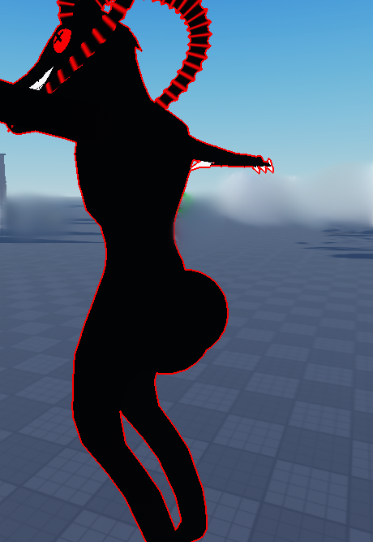
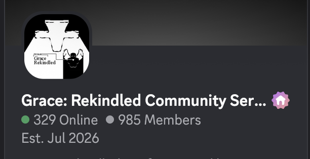

welcome 🤍
have a topic you're particularly interested in? use one of these to skip straight to it!
introduction
hey everyone! this is frank, most of you probably know me as frankthetrash on discord typing all this, and let me start off by saying thank you all so much for getting us to 1k members. truth be told, we had planned to get this done regardless of our member count, as we've always had a lot to show you all, and we just feel the regular teaser structure wouldn't do you guys any justice.
a majority of us on the team don't like the idea of showing off the visual aspects of our game and nothing else. because truth be told art is pretty easy for us. so we wanted to wait for gameplay. but that gameplay was quite a challenge to handle and we don't want to leave you guys in the dark. so this was our next best option.
general redesigns
every, or at least almost every asset in the game has been completely remade from the ground-up from og grace. that may sound like the bare minimum, but we do mean every asset. the rooms and lobby were completely built from scratch by the map building team (mostly missinginvestigator, he's the goat) but that's a major reason things take a while. we even rebuilt the code itself from scratch which was a lot harder to do than you think and still comes up with bugs
entity redesigns
mime

mime was one of the first entities we made for the game. i'm sure you can tell from ....i mean look at it. we decided to make mime a lot more simplistic mostly because, back in the original grace there was a lot of confusion about if mime's long mouth was actually a head (truth be told, i was one of the people that thought that) but don't worry, long mouth mime isn't gone from the game completely, you can trust me on that.
fun fact! when we first started testing mime's code in the game, me and the main scripter feara, didn't actually know it was even implemented in the game. so, while i was testing it i kept dying randomly. i thought it was goatman, feara thought it was a carnation bug. turned out to be an invisible mime. guess it just sorta invited itself. do with that what you will.
there's like a 25% chance our game might be haunted dw bout it tho

rue

with rue, we wanted to make it look a lot more human like in a way, giving it a slightly similar silhouette to the average sinner, while also keeping the long head that give it its general appeal.
fun fact! rue originally had transparent eyes, but i got rid of it because it would've looked really odd in-game. plus, it gives it a more notable characteristic.
covet

⚾
there was no major thought process behind this one, we just thought it looked pretty cool. minor fun fact though, this was actually designed by 3 people! 1831 did the base design, julian/divinecomedy did the keyposes, and i animated em

seesay

i'm fairly sure seesay was the second or third ever entity to be finished design-wise. it was made by neptune, for anyone that knows neptune, this probably isn't a surprise to anyone. we wanted to keep seesay's whole cutesy appeal while also making it more gender neutral if that makes sense? so we cut the sharp edges of the eyes that made it a bit more feminine, and we made the mouth wider to avoid the claims of it being a nose that the original game got. we also completely changed the eye shape because we genuinely could not figure out the lore significance of seesay of all entities having crosses in its eyes fun fact: back in ascended soul, we were quite directionless to be completely honest, so the original seesay design actually leaned more into the feminine look with eyelashes. i don't think they were intentional but you could really easily tell. that old ssesay design is lost medias though unfortunately
kookoo

kookoo (designed by dottoe1) was one of the first entities to get completely and utterly completed, everything outside the actual code had been done for this entity. there wasn't any major thought process to this redesign as far as i'm aware, but i believe it gets the job done. fun fact: because of their connection to the internet, kookoo's jumpscare screen was originally going to feature duk. this was scraped though because outside of that connection, which was only really brought by grace's retro collab anyways, they have no reason to be related like that.
drain
drain was originally meant to be its own teaser, we had gotten the model out a good while ago(model by malk), but every time we needed it animated our 3d animators would mysteriously vanish, true story! i would get into the thought process of putting the censor scribble where the head should be and making it appear docile when not active, but drain as a whole is a very nuanced topic to get into, so i'd rather not do it here.
snap


snap was another one of those more intricate entities to design (designed by nyxx), which is in striking contrast to how genuinely challenging it is to actually script this lil doofus. but we're still confident that we can handle it before the day of release.
joey
with joey (model by silverbolt) we decided to make it a little bit cartoony while also giving it some slightly anatomical proportions to make it easier to animate. there's a lot more to say about it mechanics wise if nothing else. we took a tiny bit of inspiration from an old pressure teaser for how joey could behave and plan on integrating it into the game. essentially joey's meant to wander around a room like an npc, and if you walk into it or exit that room, it automatically goes into your inventory. why would we do this? because our rat is adorable, why else?
goatman
okay i know we already teased goatman, but i just needed to put this fun fact out there, and also let you guys get a better look at the model. back when we weren't taking game development too seriously, silverbolt made it double cheeked up.

so, i asked for the obj file and went into blender to tear it off myself, which led to the creation of this beautiful image.

gameplay?
i'm sure you get the idea by now. we have a rather hefty catalogue of entities, if we were to name all of them we would be here all day. the majorly important questions i'm sure are on your minds are "is there gameplay?" "when is it coming out?" so to put it simply. peep this.
now, it should be obvious by the gameplay shown, we still have a good amount of a way to go before this game is in a properly playable state. but we are making progress. i suppose that leads to the next most important question
release date
"november 27th"
what? did you expect me to beat around the bush about it? nah our aim is to release the alpha build of the game on that date. those of you that were around for the qna held during grace's anniversary might have heard it before, but we have always intended to release the game by november. if we don't release anything on or before that date, just assume we're going to release it some time mid december to finalize things. but now that begs another question
alpha??
the alpha build of the game is intended to be the most barebones essentials version of the game. it's basically meant to function as a demo, actually less of a demo more of a playtest. it's going to feature the lobby, the main grace game mode, including every new entity we've been cooking up, a flashlight and lantern, and a few custom player animations. after which we will be getting into the meat and bone of the other core parts of the game.
unique features
i get the feeling a lot of people are into grace remakes for the sake of the domains, and everything else is treated as an after thought. this isn't just a community expectation thing either, i've noticed a lot of devs do that sort of thing as well, at least going off how they tease their stuff, not trying to name names. and don't get it wrong, we enjoy domains as much as anyone else, however, we feel it's important to have other completely unique game modes available. now, like i already mentioned. we're more locked in on the base game right now, so we can't exactly directly tell you what we have to show for other game modes, but what i can say is what we plan on changing.
- zen and reprieve are receiving a general design revamp which comes with buffing certain entities.
- big plans to make chaos mode a lot more chaotic.
- mutter with a higher focus on the third person aspect (no we are not keeping the rhythm game aspect, however we aim to make it substantially funky)
- a completely separate rhythm minigame
- an entirely new game mode that functions as a much more fun version of rot (we are not getting rid of rot don't worry)
- some very fun new items
please bare in mind everything said here is subject to change, but these are just some of the things we will majorly be working towards for the future
other teases
one of the most important things to grace was definitely the music, and i'm sure you've noticed a distinct lack of it on our side. truth be told, just like our art teases, we just felt weird teasing music without anything else to it, but since we're doing it now, let us make it up.
truth be told, the song you've been listening to this entire time
it's only going to be a snippet
